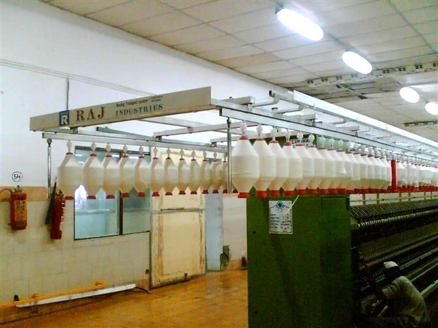
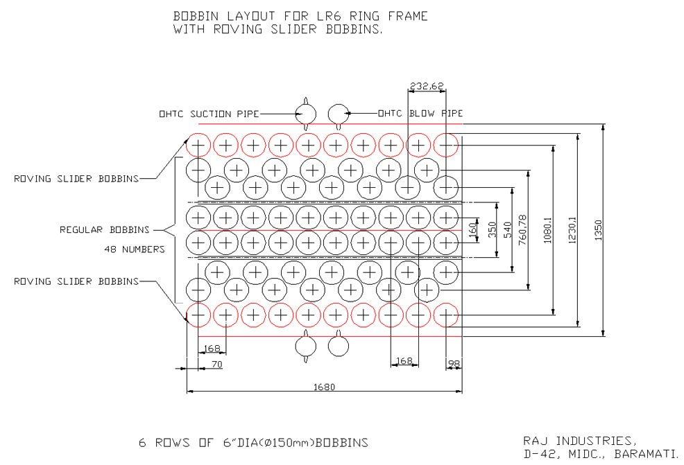

Roving Transport System For Ring Frame DOWNLOAD
Transportation of Roving frame bobbins to ring frame creel in Indian mills is carried out by roving trolley which is generally800 - 1000mm in width, The advent of auto doffing in ring frame Indian mills are finding it difficult to transport roving bobbins by this trolleys as trolleys may damage the auto doffer parts specially doffer beams. Also manual transport of roving bobbins to the ring frame creel is very tedious, time consuming and spoils the quality of roving , and cause more end breaks.
Alternate, method used in the developed countries is very highly automated and almost unaffordable in Indian conditions. Normally this Imported system works to the satisfaction for about 2- 3 years, afterwards it attract lot of maintenance, Simple chain link breakage in the system may cause about 48 to 64 man hours of maintenance to restore the system, and about 48 man hours to manually feed the machines. Auto doffer in speed frame is most complicated and need more maintenance and lot of spares. Replacement costs of customized bobbin holders are often very prohibitive. Auto doffer of Speed frame is often found remain stopped. Electronic problems are rare but an electronic problem may force to go for an entire module replacement. In short complete automated system will attract more maintenance cost than base machine. Above all fully automated textile plant may not have material handling trolleys for speed frame bobbins as default. Entire ring frame in a textile plant may be working as 3 or more group in an automated roving transport system. In case of a link breakage for the affected group of ring frames we may forced to feed speed frame bobbins manually by hand, Looking into these aspects and on demand from user of ring frames, M/s RajIndustries Baramati is come out with very simple cost-effective roving transport system with following features.
Features:
- Possible to install on any type of Ring Frame with or without auto doffing
- Will not interfere with overhead traveling cleaner or ring data system. Installation of overhead ring-data rail is made easy and simple.
- Totally maintenance free. And minimal maintenance cost
- Fluff proof movements. No jamming
- Installation is very fast, just 12 hours for one machine. Machine stoppage is not required.
- Very user friendly, no special training required for operator or maintenance personals.
- Powder coated/Galvanized parts and heavy-duty custom built Aluminium rails. Smooth movement.
- No need to keep Spare (Reserve) bobbin in the creel. More space in the creel.
- Ring frame operator can slide the roving transport slider along with him while patrolling the machine.
- Time consumed in search of reserve bobbins is minimized
- In case of Batch creeling extra slider may be used to expedite the process fast.
- Our RTS system can be adapted to batch creeling.


{kind=link}
{kind=link}